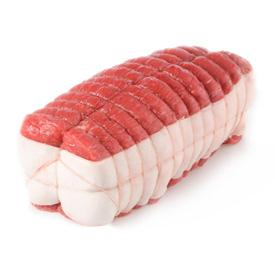

Introduction
Contrat
- Concision
- Respect
- Ecoute
- Participation
- Pas de tomate c'est la première
5
Tour de table
- Niko-Niko du jour
- Sur quoi avez-vous travaillé depuis la dernière rétro?
- Qu'attendez-vous de celle-ci? De quoi voudriez-vous parler?
10
Feedback
Notez votre ressenti de 1 à 5 sur les sujets suivants :
- Confiance dans le projet (choix techniques, état d'avancement, perspectives, ...)
- Epanouissement personnel au sein de l'équipe
- 1 : Alarmiste
- 2 : Pessimiste
- 3 : Moyen
- 4 : Bon
- 5 : Excellent
Explication en 2 ou 3 mots
5
Bilan précédent
- Bilan positif
- Bilan Neutre
- Bilan négatif
5
Niko Niko
|
 |
|
|
|
| Alexandre |
2 (8%) |
11 (46%) |
11 (46%) |
24 (69) |
| Angela |
4 (14%) |
9 (32%) |
15 (54%) |
28 (70) |
| Christophe. |
3 (11%) |
22 (82%) |
2 (7%) |
27 (48) |
| Louis |
1 (6%) |
4 (27%) |
10 (67%) |
15 (80) |
| Nathanaël |
1 (3%) |
13 (43%) |
16 (54%) |
30 (75) |
| Pierre |
6 (23%) |
2 (8%) |
18 (69%) |
26 (73) |
| Romain C. |
1 (4%) |
13 (46%) |
14 (50%) |
28 (73) |
| Romain L. |
12 (41%) |
11 (38%) |
6 (21%) |
29 (40) |
| Soumya |
6 (21%) |
4 (14%) |
19 (65%) |
29 (72) |
|
36 (15%) |
89 (38%) |
111 (47%) |
236 (66) |
20
Timeline
Notez ce qui vous a marqué durant la dernière itération.
Quoi?
- Tout ce qui vous semble important
- Evenement bon / mauvais
- Satisfaction / désagrément
- Coup de coeur / coup de gueule
Comment?
- Une information par post-it
- positif : post-it vert
- neutre : post-it jaune
- négatif : post-it orange
10
Vote
Vous avez à votre disposition 3+ et 3-.
Pour chaque thématique principale, distribuez vos +/- selon votre avis :
- Mettez un + sur ce qui vous semble positif ou prioritaire
- Mettez un - sur ce qui vous semble négatif
5
Langue de bois
A partir des post-it les plus négatifs, chacun à tour de rôle doit :
- dire en une phrase l'inverse de ce qu'il pense
- n'utiliser que des termes positifs
15
Analyse
Root Cause Analysis : cherchons à remonter à l'origine de la problématique.
A tour de rôle, chercher une cause possible à la cause précédemment trouvée.
Plan d'action : définissons des actions concrètes pour améliorer la prochaine itération.
A tour de rôle, suggérer une solution.
5
ROTI : Return On Time Invested

Vote à doigts levés
Chacun vote en assignant une note de 1 à 5 doigts sur la rétrospective
1 = j'ai perdu mon temps ... 5 = c'était très constructif
Conclusions - Feedback
A synthétiser et noter ici.
5
Conclusions - Timeline
A synthétiser et noter ici.
5
Conclusions - Problématiques
Projet
A synthétiser et noter ici.
Equipe
A synthétiser et noter ici.
5
Conclusions - Plan d'action
Projet
A synthétiser et noter ici.
Equipe
A synthétiser et noter ici.
←
→
/